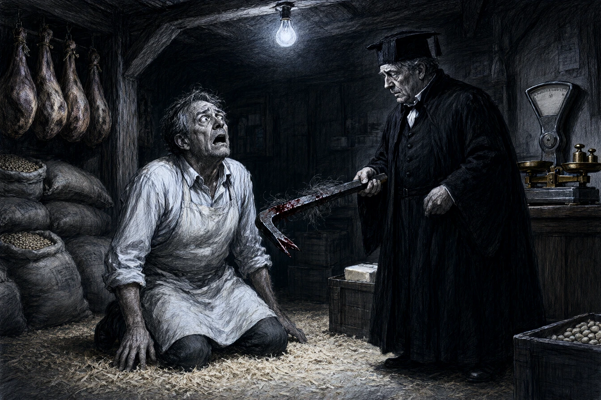

Dans son épicerie fine de la rue des Chevaliers à Sélestat, dont la vitrine de chêne ciré présentait des bocaux d'asperges blanches de Hoerdt et des pains de sucre sous cloche de verre, Frédéric Muller était la conscience civique de la paroisse. Conseiller presbytéral, trésorier de la société d'encouragement au bien et président de la commission des poids et mesures du canton, Muller ne pesait jamais un quart de livre de café sans réajuster le contrepoids de laiton d'un souffle scrupuleux.
À cinquante ans, les tempes grises taillées droit et le tablier de toile blanche impeccablement empesé, Muller avait l'œil vif des hommes dont le livre de comptes ne tolère aucun centime d'écart.
Un mardi matin d'octobre, le maréchal des logis-chef de la brigade de gendarmerie s'arrêta devant le comptoir en étain.
« Monsieur Muller, nous avons découvert un corps à l'aube dans la ruelle des Tanneurs, derrière votre remise à fûts. « Un corps ? s'écria l'épicier en lâchant sa pelle à farine. Grand Dieu, un crime dans notre quartier si paisible ? » « Le vieux Joseph, le journalier sans asile qui ramassait les cartons d'emballage le soir. Il a la boîte crânienne brisée nette par un coup porté à la tempe droite avec une barre de fer carrée. Le juge d'instruction de Colmar arrive par le train de dix heures. » »
Muller se signa avec émotion.
« Pauvre homme… Il buvait le quart de schnaps de trop le samedi soir, mais il ne faisait de tort qu'à sa santé. La commune devrait interdire le vagabondage nocturne le long des magasins de bouche. C'est un appel aux malfaiteurs de grand chemin. »
* * *
À quinze heures, la gendarmerie avait bouclé l'impasse des Tanneurs.
Monsieur le maire, monsieur le pasteur et les délégués du consistoire protestant vinrent en délégation serrer les mains de Frédéric Muller sur le seuil de son épicerie.
« Ne vous inquiétez point, cher ami, disait le pasteur en lui tapotant le bras. La réputation de votre maison est trop haute pour que la calomnie ose effleurer votre seuil. Nous savons tous que vous étiez à la veillée de prière du consistoire jusqu'à dix heures du soir. « Ma balance a toujours été juste devant Dieu et devant les hommes, » répondit l'épicier avec des larmes d'humilité dans les yeux. »
Le juge d'instruction, un petit magistrat froid en redingote noire nommé Maillard, sortit de la remise arrière en s'époussetant les manches.
Il entra dans l'épicerie et fit signe aux notables de s'écarter.
« Monsieur Muller, venez dans votre arrière-boutique une minute. Seul. »
* * *
Dans l'arrière-boutique encombrée de sacs de haricots secs et de jambons fumés suspendus aux solives, le juge posa sur une caisse de saindoux un levier de fer forgé à section carrée, servant à décercler les barriques de sel. L'arête supérieure de l'outil était tachée d'un sang brun séché mêlé de cheveux gris.
Muller s'appuya contre le jambier d'acajou, les lèvres devenues blanches.
« Le levier porte les initiales de votre grand-père fondues dans l'acier, monsieur Muller, dit le juge sans hausser le ton. Et les semelles du vagabond portaient des grains de poivre noir concassé que l'on ne trouve que sur le plancher de votre cellier. « Il volait dans mes caisses, monsieur le juge ! » sanglota soudain l'épicier, tombant à genoux sur la sciure de pin. »
Les mains de l'honnête homme tremblaient d'une terreur convulsive.
« Chaque mardi soir, il passait par la trappe à charbon pour me dérober deux saucissons et un morceau de lard gras ! J'ai fait le guet dans l'obscurité avec le levier pour lui donner une correction, pour lui faire peur, pour sauver mon bien ! Il a trébuché sur un panier d'oignons en voulant fuir, le fer est parti tout seul… Je n'ai jamais voulu le tuer ! Je suis un homme honorable, monsieur le juge ! Toute la ville témoigne pour moi ! »
Le juge Maillard rangea le levier sous un linge d'épreuve.
« Toute la ville vous croit vertueux, monsieur Muller, répondit le magistrat d'une voix tranquille. C'est pour cela que votre procès aux assises de Colmar sera d'une édification exemplaire pour les basses classes. »
Il poussa la porte battante vers la rue.
Sous les vitrines étincelantes de l'épicerie, les notables de Sélestat attendaient encore sur le trottoir pour acclamer leur saint patron civique, tandis que deux gendarmes entraient dans la boutique les menottes de fer à la main.